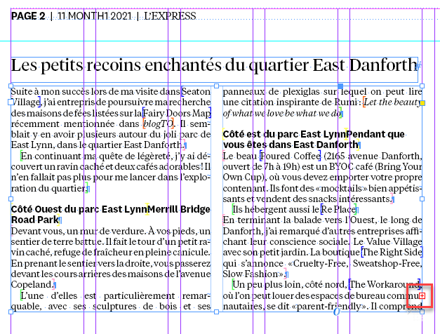
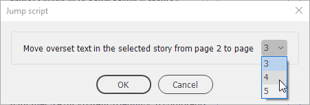
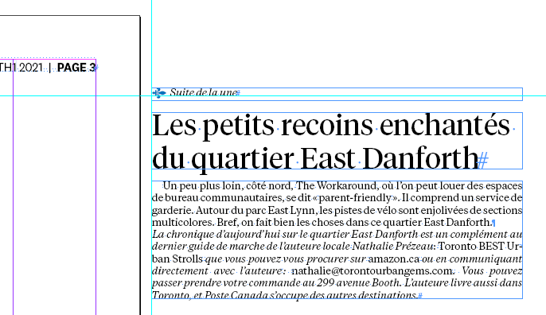
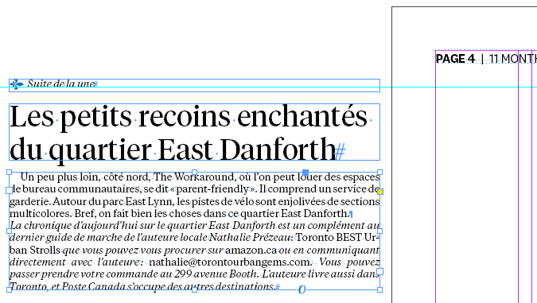
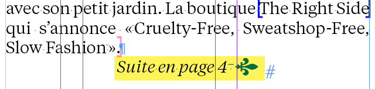
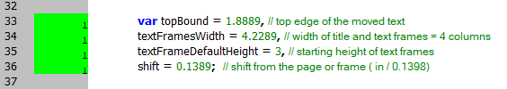

Jump script
Version 2.1 for InDesign 2022 and the current document (the previous version for the book is here).
The scenario
User selects which story on the source page to apply the script: by selecting a frame with overset text / selecting some text / placing the cursor into the text frame.

User launches the script and selects which page to jump the text to (the destination page). The source page — where the selected text frame is located — is unavailable in the drop-down list since it makes no sense to move the text to the same page.

The script creates and displays a set of text frames on the pasteboard of the destination page: outside of the page (to the left for verso, and to the right for recto).
- The body text moved from the overset source text.
- The header with h1 paragraph style applied
- The Suite de la une text
Verso

Recto

At the end of the source text, Suite en page X text is added.

The text frame with moved text is created first: with the top edge (Y) at 1.8889
Then the header is created at the top of the abovementioned frame: with a gap of 0.1389
Finally, the Suite de la une text is added: with the same gap.
Users can change the settings by editing the followings lines after carefully reading the comments:

Click here to download the script.
Go back to the main Scripts for L'Express de Toronto Inc. page